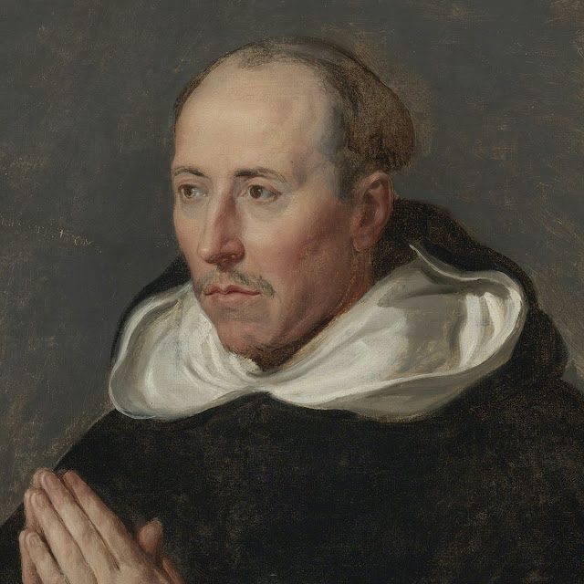

Saint Thomas Aquinas
Italian Dominican theologian Saint Thomas Aquinas was one of the most influential medieval thinkers of Scholasticism and the father of the Thomistic school of theology.
Who Was Saint Thomas Aquinas?
Combining the theological principles of faith with the philosophical principles of reason, Saint Thomas Aquinas ranked among the most influential thinkers of medieval Scholasticism. An authority of the Roman Catholic Church and a prolific writer, Aquinas died on March 7, 1274, at the Cistercian monastery of Fossanova, near Terracina, Latium, Papal States, Italy.
Early Life
Combining the theological principles of faith with the philosophical principles of reason, Saint Thomas Aquinas ranked among the most influential thinkers of medieval Scholasticism. An authority of the Roman Catholic Church and a prolific writer, Aquinas died on March 7, 1274, at the Cistercian monastery of Fossanova, near Terracina, Latium, Papal States, Italy.
Before Saint Thomas Aquinas was born, a holy hermit shared a prediction with his mother, foretelling that her son would enter the Order of Friars Preachers, become a great learner and achieve unequaled sanctity.
ollowing the tradition of the period, Saint Thomas Aquinas was sent to the Abbey of Monte Cassino to train among Benedictine monks when he was just 5 years old. In Wisdom 8:19, Saint Thomas Aquinas is described as "a witty child" who "had received a good soul." At Monte Cassino, the quizzical young boy repeatedly posed the question, "What is God?" to his benefactors.
Saint Thomas Aquinas remained at the monastery until he was 13 years old, when the political climate forced him to return to Naples.
Education
Saint Thomas Aquinas spent the next five years completing his primary education at a Benedictine house in Naples. During those years, he studied Aristotle's work, which would later become a major launching point for Saint Thomas Aquinas's own exploration of philosophy. At the Benedictine house, which was closely affiliated with the University of Naples, Thomas also developed an interest in more contemporary monastic orders. He was particularly drawn to those that emphasized a life of spiritual service, in contrast with the more traditional views and sheltered lifestyle he'd observed at the Abbey of Monte Cassino.
Circa 1239, Saint Thomas Aquinas began attending the University of Naples. In 1243, he secretly joined an order of Dominican monks, receiving the habit in 1244. When his family found out, they felt so betrayed that he had turned his back on the principles to which they subscribed that they decided to kidnap him. Thomas's family held him captive for an entire year, imprisoned in the fortress of San Giovanni at Rocca Secca. During this time, they attempted to deprogram Thomas of his new beliefs. Thomas held fast to the ideas he had learned at university, however, and went back to the Dominican order following his release in 1245.
From 1245 to 1252, Saint Thomas Aquinas continued to pursue his studies with the Dominicans in Naples, Paris and Cologne. He was ordained in Cologne, Germany, in 1250, and went on to teach theology at the University of Paris. Under the tutelage of Saint Albert the Great, Saint Thomas Aquinas subsequently earned his doctorate in theology. Consistent with the holy hermit's prediction, Thomas proved an exemplary scholar, though, ironically, his modesty sometimes led his classmates to misperceive him as dim-witted. After reading Thomas's thesis and thinking it brilliant, his professor, Saint Albert the Great, proclaimed in Thomas's defense, "We call this young man a dumb ox, but his bellowing in doctrine will one day resound throughout the world!"
Theology and Philosophy
After completing his education, Saint Thomas Aquinas devoted himself to a life of traveling, writing, teaching, public speaking and preaching. Religious institutions and universities alike yearned to benefit from the wisdom of "The Christian Apostle."
t the forefront of medieval thought was a struggle to reconcile the relationship between theology (faith) and philosophy (reason). People were at odds as to how to unite the knowledge they obtained through revelation with the information they observed naturally using their mind and their senses. Based on Averroes' "theory of the double truth," the two types of knowledge were in direct opposition to each other. Saint Thomas Aquinas's revolutionary views rejected Averroes' theory, asserting that "both kinds of knowledge ultimately come from God" and were therefore compatible. Not only were they compatible, according to Thomas's ideology, but they could also work in collaboration: He believed that revelation could guide reason and prevent it from making mistakes, while reason could clarify and demystify faith. Saint Thomas Aquinas's work goes on to discuss faith and reason's roles in both perceiving and proving the existence of God.
Saint Thomas Aquinas believed that the existence of God could be proven in five ways, mainly by: 1) observing movement in the world as proof of God, the "Immovable Mover"; 2) observing cause and effect and identifying God as the cause of everything; 3) concluding that the impermanent nature of beings proves the existence of a necessary being, God, who originates only from within himself; 4) noticing varying levels of human perfection and determining that a supreme, perfect being must therefore exist; and 5) knowing that natural beings could not have intelligence without it being granted to them it by God. Subsequent to defending people's ability to naturally perceive proof of God, Thomas also tackled the challenge of protecting God's image as an all-powerful being.
Saint Thomas Aquinas also uniquely addressed appropriate social behavior toward God. In so doing, he gave his ideas a contemporary—some would say timeless—everyday context. Thomas believed that the laws of the state were, in fact, a natural product of human nature, and were crucial to social welfare. By abiding by the social laws of the state, people could earn eternal salvation of their souls in the afterlife, he purported. Saint Thomas Aquinas identified three types of laws: natural, positive and eternal. According to his treatise, natural law prompts man to act in accordance with achieving his goals and governs man's sense of right and wrong; positive law is the law of the state, or government, and should always be a manifestation of natural law; and eternal law, in the case of rational beings, depends on reason and is put into action through free will, which also works toward the accomplishment of man's spiritual goals.
Combining traditional principles of theology with modern philosophic thought, Saint Thomas Aquinas's treatises touched upon the questions and struggles of medieval intellectuals, church authorities and everyday people alike. Perhaps this is precisely what marked them as unrivaled in their philosophical influence at the time, and explains why they would continue to serve as a building block for contemporary thought—garnering responses from theologians, philosophers, critics and believers—thereafter.
Major Works
A prolific writer, Saint Thomas Aquinas penned close to 60 known works ranging in length from short to tome-like. Handwritten copies of his works were distributed to libraries across Europe. His philosophical and theological writings spanned a wide spectrum of topics, including commentaries on the Bible and discussions of Aristotle's writings on natural philosophy.
While teaching at Cologne in the early 1250s, Saint Thomas Aquinas wrote a lengthy commentary on scholastic theologian Peter Lombard's Four Books of Sentences, called Scriptum super libros Sententiarium, or Commentary on the Sentences. During that period, he also wrote De ente et essentia, or On Being and Essence, for the Dominican monks in Paris.
In 1256, while serving as regent master in theology at the University of Paris, Aquinas wrote Impugnantes Dei cultum et religionem, or Against Those Who Assail the Worship of God and Religion, a treatise defending mendicant orders that William of Saint-Amour had criticized.
Written from 1265 to 1274, Saint Thomas Aquinas's Summa Theologica is largely philosophical in nature and was followed by Summa Contra Gentiles, which, while still philosophical, comes across to many critics as apologetic of the beliefs he expressed in his earlier works.
Saint Thomas Aquinas is also known for writing commentaries examining the principles of natural philosophy espoused in Aristotle's writings: On the Heavens, Meteorology, On Generation and Corruption, On the Soul, Nicomachean Ethics and Metaphysics, among others.
Shortly after his death, Saint Thomas Aquinas's theological and philosophical writings rose to great public acclaim and reinforced a strong following among the Dominicans. Universities, seminaries and colleges came to replace Lombard's Four Books of Sentences with Summa Theologica as the leading theology textbook. The influence of Saint Thomas Aquinas's writing has been so great, in fact, that an estimated 6,000 commentaries on his work exist to date.
Later Life and Death
In June 1272, Saint Thomas Aquinas agreed to go to Naples and start a theological studies program for the Dominican house neighboring the university. While he was still writing prolifically, his works began to suffer in quality.
During the Feast of Saint Nicolas in 1273, Saint Thomas Aquinas had a mystical vision that made writing seem unimportant to him. At mass, he reportedly heard a voice coming from a crucifix that said, "Thou hast written well of me, Thomas; what reward wilt thou have?" to which Saint Thomas Aquinas replied, "None other than thyself, Lord."
When Saint Thomas Aquinas's confessor, Father Reginald of Piperno, urged him to keep writing, he replied, "I can do no more. Such secrets have been revealed to me that all I have written now appears to be of little value." Saint Thomas Aquinas never wrote again.
In January 1274, Saint Thomas Aquinas embarked on a trip to Lyon, France, on foot to serve on the Second Council, but never made it there. Along the way, he fell ill at the Cistercian monastery of Fossanova, Italy. The monks wanted Saint Thomas Aquinas to stay at the castle, but, sensing that his death was near, Thomas preferred to remain at the monastery, saying, "If the Lord wishes to take me away, it is better that I be found in a religious house than in the dwelling of a layperson."
Often called "The Universal Teacher," Saint Thomas Aquinas died at the monastery of Fossanova on March 7, 1274. He was canonized by Pope John XXII in 1323.